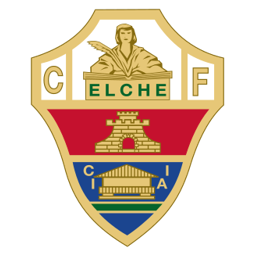
ELHistoria y resiliencia
Elche CF
1923
Año de fundación del club
Franjiverdes
Una breve historia
Fundado en 1923, el Elche CF ha sido un habitual de la Primera División española en distintas décadas, destacando por dos finales de Copa del Rey en los años 60 y 80, y por una afición fiel pese a las dificultades institucionales que ha superado en su historia reciente.
Fieles a los colores
de Elche
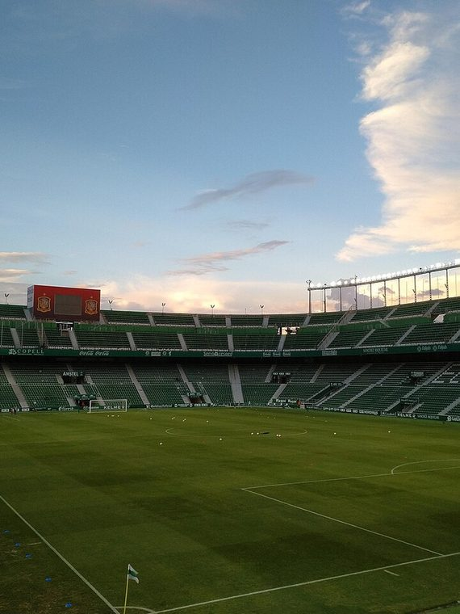
📷Foto pendiente
(elche-1.jpg)';" />
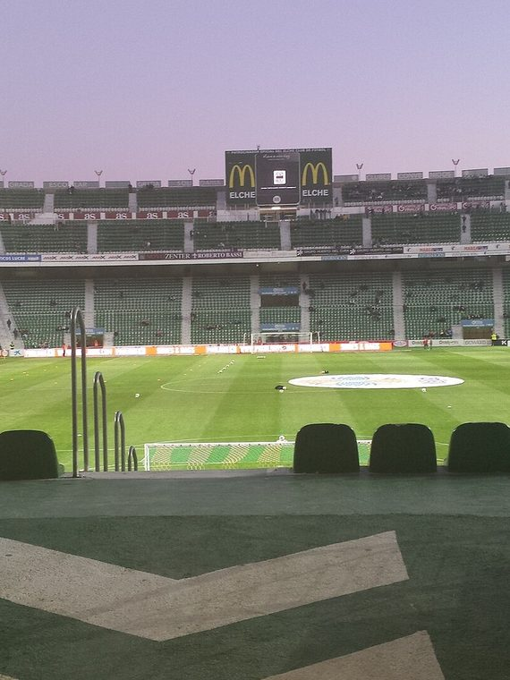
📷Foto pendiente
(elche-2.jpg)';" />
Títulos y logros
Momentos que hicieron historia
★
Finalista de la Copa del Rey en 1968/69 y 1983/84
★
Club centenario del este de España
★
Ejemplo de resiliencia institucional en el fútbol español
La rivalidad
El duelo que enciende a la afición
Temporada 2026 / 27
Plantilla del primer equipo
Datos de ejemplo — reemplázalos con la plantilla real en data/teams.js.
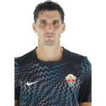
🧑';" /> M. Dituro Portero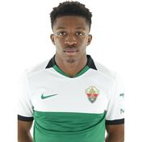
🧑';" /> B. Sangare Defensa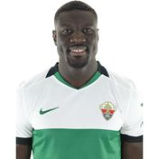
🧑';" /> Diaby Defensa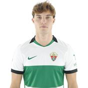
🧑';" /> Santiago Centrocampista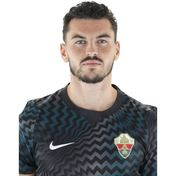
🧑';" /> A. Iturbe Portero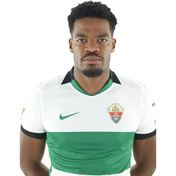
🧑';" /> Diang Centrocampista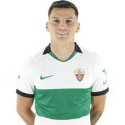
🧑';" /> Cepeda Delantero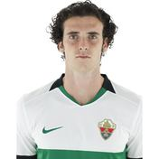
🧑';" /> Morcillo Centrocampista